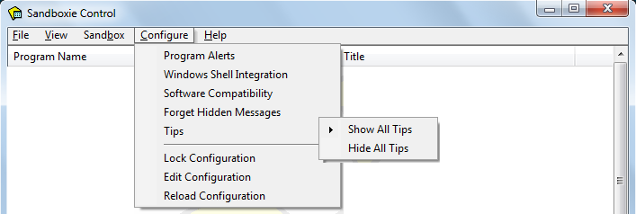
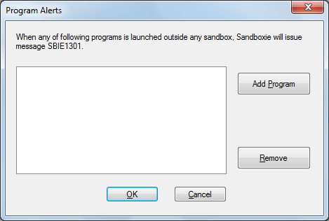

Configure Menu
Sandboxie Control > Configure Menu

Program Alerts
The Program Alerts command opens the following window in which you can configure Sandboxie to issue message SBIE1301 whenever specific programs start outside any sandbox.

-
Use the Add Program button to open the Program Groups window and select a program to add.
-
For example, iexplore.exe for Internet Explorer, or firefox.exe for Firefox.
- Alternatively, Internet Explorer is typically found in the folder C:\Program Files\Internet Explorer.
- Mozilla Firefox is typically found in the folder C:\Program Files\Mozilla Firefox.
If the desired program is already running sandboxed, you can also use Program Settings to specify that message SBIE1301 should be issued for the program.
Related Sandboxie Ini setting: AlertProcess.
Windows Shell Integration
The Windows Shell Integration command opens a window which controls how Sandboxie Control integrates into and associates itself with your Windows desktop. It can also be used to create desktop shortcut icons to run your programs sandboxed. By default, all settings in the window are enabled.
-
The top frame indicates when Sandboxie Control should start:
-
When Windows starts will integrate Sandboxie Control into the startup sequence
-
When a sandboxed program starts will start Sandboxie Control (if it is not already running) when a sandboxed program starts. This applies to programs that are started explicitly through Sandboxie, such as when using the Run Sandboxed commands, or shortcuts created using Add Shortcut Icons (see below). It also applies to forced programs and forced folders.
-
The middle frame deals with shortcut icons:
-
Add desktop shortcut for starting Web browser under Sandboxie creates (when checked) or removes (when cleared) the Sandboxed Web Browser shortcut icon on your desktop.
-
Add Quick Launch shortcut for starting Web browser under Sandboxie creates (when checked) or removes (when cleared) the Sandboxed Web Browser shortcut icons on your Quick Launch bar. The Quick Launch bar is typically adjacent to the Windows Start menu button.
-
Add Shortcut Icons creates a shortcut icon on your desktop to run a specific program under the supervision of Sandboxie. The program is selected from the Sandboxie Start menu. Note that if any programs were installed into the sandbox, the Sandboxie Start menu will include the shortcuts created during the installation, and they can be used to create desktop shortcuts. To remove desktop shortcuts created using Add Shortcut Icons, simply delete them from your desktop.
-
The bottom frame controls "right-click" shell integration:
-
Add right-click action "Run Sandboxed" to files and folders enables (when checked) or removes (when cleared) the Run Sandboxed option which appears when you click the right mouse button on a file or folder on your desktop or in Windows Explorer.
-
Add sandboxes as targets for "Send To" action enables (when checked) or removes (when cleared) the available sandboxes as an option in the Send To action that appears when you click the right mouse button on a file or folder on your desktop or in Windows Explorer. If this setting is enabled, Sandboxie Control will automatically update the list of Send To targets whenever sandboxes are created or removed.
Software Compatibility
The Software Compatibility command opens a window with a list of available compatibility templates.
Forget Hidden Messages
Whenever Sandboxie Control displays one or more SBIE Messages, you have the option to hide future instances of the message. This is accomplished by highlighting and clicking the Hide command:

Note that messages are filtered by message code alone. For instance, the picture above shows message SBIE1304 with information detail osk.exe. Hiding that message will hide all future instances of message SBIE1304, regardless of the information detail.
The Forget Hidden Messages command tells Sandboxie to stop filtering messages, and resume the display of all SBIExxxx messages that occurs.
Tips
When Sandboxie Control displays a warning or notification message box, it usually includes a checkbox labeled In the future, don't show this message. If you mark the checkbox, that particular message will not be displayed again.
The Show All Tips command tells Sandboxie to disregard any such use of the checkboxes, and resume displaying of all warnings and notifications.
The Hide All Tips command tells Sandboxie to consider all checkboxes as checked, and not display any warnings or notifications.
Lock Configuration
Please see Configuration Protection.
Edit Configuration
Opens the system text editor (typically, Windows Notepad) to edit the Sandboxie Ini configuration file. The Reload Configuration command will be automatically invoked when the editor is closed.
Note: Manual editing of Sandboxie.ini is not recommended. You are advised to use Sandbox Settings and other configuration windows in Sandboxie Control to make any changes to the configuration of Sandboxie.
Note: The Sandboxie Ini configuration file is usually located in the Windows folder, and cannot be modified by non-privileged user accounts. If you use Windows with User Account Control (UAC), you may have to elevate to an Administrator account before you can modify Sandboxie.ini.
Reload Configuration
Forces Sandboxie to reload its configuration from the Sandboxie Ini configuration file.
Go to Sandboxie Control, Help Topics.